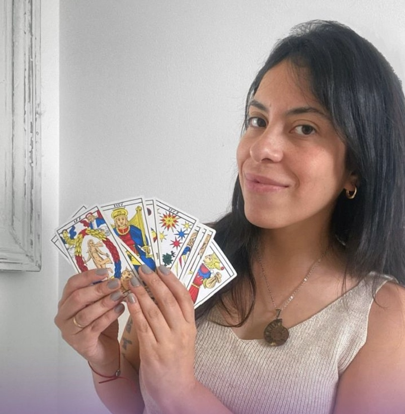

Método ATM
Método propio único y personalizado para acompañarte
Ver detalleNo predigo tu futuro: te ayuda a entender tu presente y a cuidar tu energía en el día a día.

Técnica psicofísica
Desde chica descubrí que podía percibir lo que muchos no veían. Con el tiempo, esa sensibilidad dejó de ser una duda y se volvió una certeza que me permitió descubrirme y acompañar a otros en su proceso evolutivo.
Me formé en psicofísica, tarot, astrología y meditación, logrando obtener una técnica única: parto de lo que vos necesitás y combino las herramientas que ese proceso pide. De ahí nace el Método ATM.
Uniendo lo invisible con lo visible
Método propio único y personalizado para acompañarte
Ver detalleEquilibrá tu campo energético
Ver detalleLa rueda del cielo completa, con tu Sol, tu Luna y tu Ascendente explicados
Calcular mi cartaEl mensaje del oráculo para hoy, o un arcano mayor del tarot de Marsella
Sacar mi cartaLas fases, los signos y los planetas retrógrados, mes a mes hasta 2030
Ver el calendarioEscribime y lo charlamos.